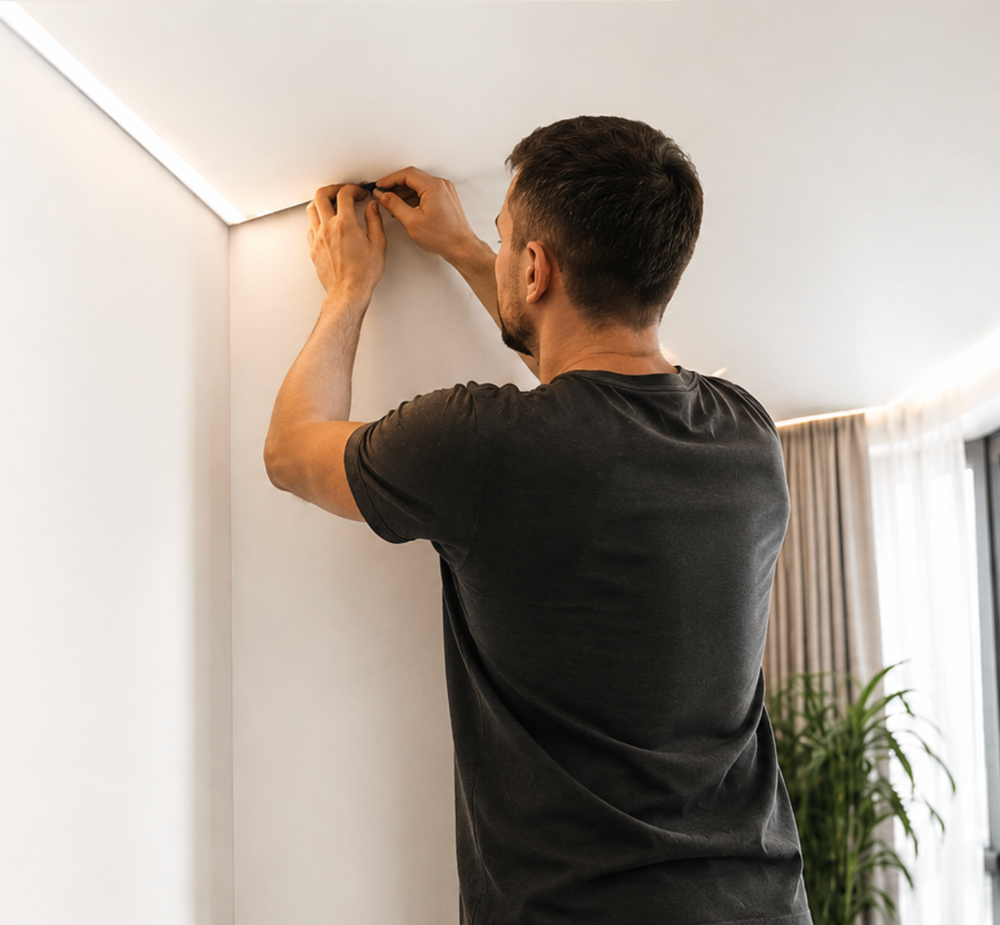

Спокойнее глянца, выразительнее матового. Пришлите фото — покажем, как смотрится сатин, сравним с матовым вариантом и рассчитаем стоимость.
Бесплатно · без звонков — пришлите фото комнаты, подскажем, будет ли сатин смотреться лучше матового именно в вашем интерьере.

Сатиновый потолок — это натяжное полотно с лёгким мягким отражением. Не такой зеркальный, как глянцевый, но и не такой нейтральный, как матовый.
В интерьере сатин выглядит чуть выразительнее: он мягко реагирует на свет, может казаться более «дорогим» и живым, но при этом не отражает комнату как зеркало.
Это компромисс между спокойным матовым и ярким глянцем — для тех, кому хочется лёгкой игры света, но без зеркальности.
Сатиновый потолок крупно. Светлая гостиная или спальня, естественный свет из окна, мягкое отражение на полотне, без зеркального отражения мебели.
Сатин хорошо работает в интерьерах, где хочется спокойный потолок, но с лёгким визуальным эффектом от света.
Мягкое отражение света, чуть теплее визуально. Особенно хорошо с вечерней подсветкой.
Подобрать для спальни →Интереснее матового, но не перетягивает всё внимание на себя.
Посчитать гостиную →Сочетается с точечным светом, треками, скрытым карнизом и светлыми интерьерами.
Подобрать для кухни-гостиной →Если ремонт «для себя» и хочется не самый простой потолок — сатин может стать альтернативой матовому.
Посчитать новостройку →Сатин раскрывается там, где есть естественный свет, светлые стены и спокойная мебель.
Сравнить по фото →Если старый глянец надоел, а матовый кажется простым — сатин будет мягким промежуточным вариантом.
Оценить замену →За баланс: спокойнее глянца, но даёт больше игры света, чем матовый потолок.
Сатиновая фактура отражает свет деликатно, без сильного зеркального эффекта.
По сравнению с матовым потолком сатин может выглядеть чуть глубже и интереснее.
Не превращает потолок в зеркало — подходит для спокойных современных комнат.
Точечные светильники, треки, скрытая подсветка и естественный свет делают сатин живым.
Более дорогой визуальный эффект без сложных решений — хороший выбор для своей квартиры.
Скрытый карниз, подсветка в нише и мягкий свет хорошо раскрывают сатиновую фактуру.
Сатиновый потолок нравится не всем. Его лучше выбирать осознанно — он заметнее реагирует на свет, чем матовый.
Если вы хотите максимально спокойный потолок без отражений, возможно, лучше выбрать матовое полотно.
Днём, вечером и при искусственном освещении сатиновая фактура может восприниматься по-разному.
Если в комнате много мебели, яркий свет и сложный интерьер, сатин может добавить лишнюю визуальную активность.
На поверхности с мягким отражением заметнее ошибки света, волны или неудачное расположение светильников.
Сатин лучше выбирать не отдельно, а по фото комнаты: стены, свет, мебель и окна сильно влияют на восприятие.
Главное отличие — в отражении света и ощущении в интерьере. Не бывает «лучшей» фактуры для всех — есть та, что подходит конкретной комнате.
Почти не бликует, выглядит как ровно окрашенный потолок.
Мягко отражает свет, выглядит выразительнее матового, но без зеркальности.
Сильно отражает комнату и свет. Визуально увеличивает пространство, но подходит не всем.
Сатиновая фактура хорошо работает не только сама по себе, но и в сочетании со светом, карнизом и современными профилями.
Базовый сатиновый потолок. Ровное полотно, простой профиль, люстра по центру.
Сатиновое полотно, стандартный профиль, люстра или простой свет.
Точечные светильники помогают раскрыть мягкое отражение сатина и равномерно осветить комнату.
Сатин с точечным светом. Гостиная, 6–8 светильников, мягкие отражения от ламп.
Скрытый карниз + сатин. Шторы выходят из потолка, спальня у окна, вечерний свет.
Сатин + шторы из потолка дают мягкий, спокойный и более дорогой визуальный эффект.
Мягкая подсветка подчёркивает фактуру и создаёт вечерний сценарий света.
Сатин с вечерней подсветкой. Тёплая LED по периметру, тёмный вечер в спальне.
Сатин + теневой профиль. Тёмный зазор 8–10 мм между стеной и потолком, кухня-гостиная.
Чистый современный контур без потолочного плинтуса и мягкая фактура полотна.
Цена зависит от площади, профиля, света, карниза, материала, сложности монтажа и состава работ. Важно считать не только полотно, а готовый потолок.
Спокойный потолок с мягким отражением, люстра или несколько светильников.
Сатин хорошо смотрится в светлой гостиной, особенно со скрытым карнизом или точечным светом.
Сатиновое полотно, свет по зонам, скрытый карниз или трековая система.
Цены — заглушки. Точную стоимость считаем по фото за 1 час или фиксируем после замера в договоре.
Сатин важно смотреть на фото с разным светом: днём, вечером и при включённых светильниках.
Спальня: общий вид, потолок при дневном и вечернем свете, окно со шторами.
Мягкое отражение света, спокойная фактура, можно добавить скрытый карниз или подсветку.
Гостиная: общий вид, потолок и свет, крупно фактура.
Сатин добавляет интерьеру чуть больше глубины, но не превращает потолок в зеркало.
Кухня-гостиная: вид целиком, зоны света, карниз/шторы, фактура при освещении.
Хорошо сочетается с точечным светом, треками и скрытым карнизом.
Подсветка вечером: общий вид комнаты, деталь потолка с LED-подсветкой.
Мягкая подсветка подчёркивает фактуру и помогает сделать вечерний сценарий света.
Сатин нужно выбирать с учётом света и интерьера. Сначала смотрим комнату по фото, потом считаем варианты.
Смотрим свет, окна, стены, мебель, стиль и технические детали.
Показываем, где лучше подойдёт сатин, а где спокойнее будет матовый потолок.
Считаем полотно, профиль, монтаж, свет, карниз и другие элементы.
Проверяем размеры, углы, трубы, свет, стены и технические нюансы.
После замера прописываем материалы, цену, сроки и гарантию.
Устанавливаем сатиновое полотно, светильники, карниз или дополнительные элементы.
Сатин важно смотреть не только при дневном, но и при искусственном освещении.
Матовый потолок выглядит спокойнее и почти не отражает свет. Сатиновый мягко отражает свет и выглядит чуть выразительнее, но без сильной зеркальности.
Он может давать мягкие световые отражения, но не отражает комнату как глянцевый потолок. Восприятие зависит от освещения.
Если нужен максимально спокойный потолок — чаще выбирают матовый. Если хочется чуть больше игры света и выразительности — можно рассмотреть сатин.
Да, особенно если в спальне мягкий свет, спокойный интерьер и хочется чуть более выразительный потолок, чем матовый.
Да, но важно учитывать свет, вытяжку, вентиляцию и общий интерьер. По фото можно понять, будет ли сатин уместен.
Цена зависит от конкретного материала, площади, профиля, света и монтажа. Иногда разница небольшая, но точный расчёт лучше делать по комнате.
Да. Сатиновое полотно хорошо сочетается со скрытым карнизом и мягкой подсветкой, особенно в спальнях и гостиных.
Лучше прислать фото комнаты. Посмотрим свет, стиль, окна и предложим матовый или сатиновый вариант с объяснением разницы.
Пришлите фото комнаты — сравним варианты, покажем, где сатин будет смотреться лучше, а где спокойнее выбрать матовый потолок.
Сатиновые натяжные потолки выбирают для интерьеров, где хочется спокойный потолок с мягким отражением света. Сатиновое полотно выглядит выразительнее матового, но не даёт сильной зеркальности как глянцевый потолок. Подходит для спальни, гостиной, кухни-гостиной, новостройки и ремонта «для себя».
Стоимость сатинового натяжного потолка зависит от площади помещения, профиля, количества светильников, скрытого карниза, подсветки, материала и сложности монтажа. «Потолок и Точка» рассчитывает потолки по фото или после замера, показывает несколько вариантов под бюджет и фиксирует финальную смету в договоре.
Рассчитать сатиновый потолок